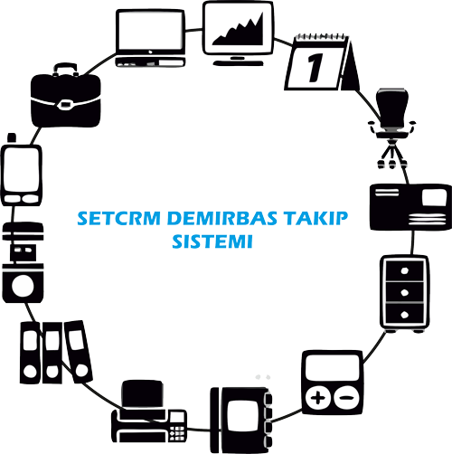

SetCRM Demirbaş Takip Sistemi

Demirbaş Yönetim Sistemi ile Barkod, RFID teknolojilerini taşınabilir veri terminalleri kullanarak yüksek performans ve hareket kabiliyeti ile Durağan ve Hareketli Varlıklarınızın takibi düşünülmüştür. Özellikle büyük ve dağıtılmış yapıdaki şirketlerde Demirbaş olarak adlandırdığımız varlıkların takibi, işletmenin varlıklarına sahip çıkması önem arz etmektedir. Bu aşamada ihtiyaçlarınızı gerek yazılım, gerek teknoloji gerekse servislerimiz ile karşılamaktayız.
- Standart ve 2D Barkod Kullanımı,
- RFID Kullanımı,
- Taşınabilir Veri Terminali Kullanımı,
- Çoklukla kullandığınız ekranların taşınabilir Veri Terminali ve GPRS ile kullanımı,
- Çoklu Yerleşim ve dağıtılmış yapılara özel Veri Tabanı yapısı,
- Veri Tabanının Diğer Veri Tabanı öğeleri ile birleşerek Şirket Veri Ambarı (Company Data Warehouse) oluşumunu desteklemesi,
- Yazılım, Donanım, Servis ve bu konu ile aklınıza gelebilecek her türlü komponent’in satılması, kiralanması, outsource edilmesi, anahtar teslim işletme ve devredilmesi,
SETCRM Demirbaş modülü ile yapabilecekleriniz
- Sahaya çıktığınız zaman elinizdeki Envanter Listesi ile Sahadaki gerçek arasındaki farkı verir.
- İşyerinizdeki tüm donanım, yazılım, ofis malzemeleri, elektronik ve elektrikli cihazları takip eder.
- Hangi ürün kimin tarafından kullanılmakta, kime zimmetli, şu anki statüsü nedir ?
- Demirbaşlarınızın tamir, bakım, sigorta ve benzeri periodlarını takip eder.
- Demirbaşlarınızın tarihi dolanım (history) raporlarını alır.
- Bakım, Sigorta vb. anlaşması yapmak istediğinizde detaylı demirbaş listeler.
- Markalara, modellere, teknik alt detaylara göre filtrelerle değişik açılardan demirbaş listeler.
- Envanter tanımı yapılırken çok detaylı tanım yapabilme özelliği İstediğiniz detaya inebilme ve bu detaylara göre filtreleme yaparak raporlama imkanı (Soyağacı, Marka-Model, Hareket Kodları, Evrak No., Seri No.)
- Envanter girişinde Marka ve buna bağlı olarak Model belirtebilme ve bu özelliklere göre gruplu raporlama imkanı.
- Çok şubeli bir firma ya da bir kaç firmadan oluşmuş bir organizasyon ve bunların her birinin şubeleri için tanım yapabilme, şubeleri yerlere bölebilme ve aralarında demirbaş transferi özelliği.
- Alış yaptığınız, çalıştığınız, tamir ya da bakım anlaşmanız olan firmaları istediğiniz kategorilere göre tanımlayabilme ve demirbaşların alındığı firmaları tutabilme özelliği.
- Her personelin çalıştığı, bulunduğu yer sorumlu olduğu yer, kullandığı demirbaşlar ve varsa zimmeti altında olan demirbaşların detaylı takibi.
- Her demirbaşın girişi yapıldığında sistem tarafından ürüne (parça, grup, lokasyon, evrak) tek bir sistem numarası üretilmesi (unique).
- Her ürünün fiyat bilgisinin gerek TL. Gerekse herhangi bir döviz cinsi olarak girilebilmesi, günlük döviz kurlarından gerekli çevrimlerin program tarafından yapılması imkânı.
- Ürünlerin Garanti bitiş tarihlerini, Bakım anlaşması bitiş tarihlerini varsa sözleşme türlerini takip imkanı.
- Birkaç parçadan oluşan ve içindeki parçaları önem taşıyan demirbaşlarda (Donanım Grubu) parçaları tek tek veya ayrı ayrı tanımlayabilme, bar kodlayabilme ve takip edebilme özelliği.
- Gerektiğinde parçayı başka bir donanım grubuna kolaylıkla ekleyebilme imkanı.
- Bir demirbaşın sisteme girmesinden itibaren başından geçen tüm hikâyenin (yerler arası transfer, kullanıcılar arası transfer, zimmet grupları arası transfer, tamir, hurda, konsinye, bakım vb. amaçlı çıkışlarının) sizin tarif edebildiğiniz hareket kodlarıyla takibi imkanı. Ve bu hareket kodlarına göre gruplanmış detaylı raporlar alabilme imkanı.
Herhangi bir ürünü (parça, grup) barkod okuyucu ile okuttuğunuzda
- Demirbaşın o anda kim tarafından kullanıldığını,
- Hangi şubede hangi departmanda olduğunu,
- Kimin zimmetinde olduğunu,
- Varsa içindeki parçalar ve onların detaylarını,
- Parçaysa hangi donanım içinde olduğunu,
- Firmaya girdiği tarih itibariyle tüm hikâyesinin özet ve detaylı takibini,
- Zaman içindeki yer değişimlerini, kullanıcı değişimlerini, durum değişimlerini (sağlam, arızalı, hurda, bağış, satış vb),
- Ve düşleyebildiğiniz tüm detayları takip edebileceksiniz.
- Zimmet ve diğer tüm evraklar (fatura, sevk irsaliyesi vd) için barkod basabilme imkanı.
- Bir kullanıcıya ait demirbaşları ifade eden barkod basabilme imkanı (kullanıcı grubu).
Bir departmanın (lokasyon/yer) detayına baktığınızda
- Buradaki bütün demirbaşları (donanım gruplarını, kullanıcı gruplarını, parçaları),
- Burada kimlerin çalıştığını, yerin sorumlusunun kim olduğunu,
Detaylı Raporlama ile
- Kullanımda bulunan bütün demirbaşları,
- Parçanın tanımına ilişkin bütün detayları ile,
- Firması, Şubesi, Yerine ilişkin bilgilerle,
- Sorumlu kişi ya da zimmet grubu için filtreleme yaparak ve Parça ve donanım gruplaması kolaylığı ile,Tarih Aralığına ve tanımı yapılan tüm diğer değişkenlere göre filtreleyerek,tasnif edebilecek, dökümler elde edebileceksiniz…